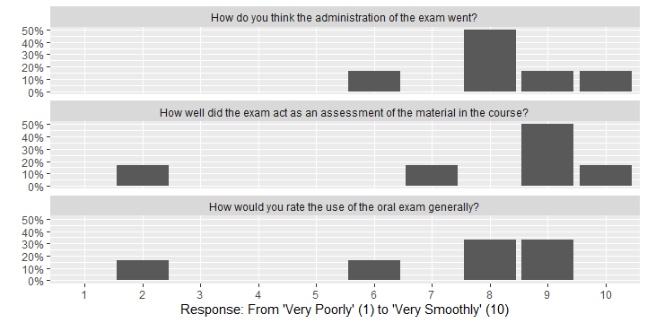
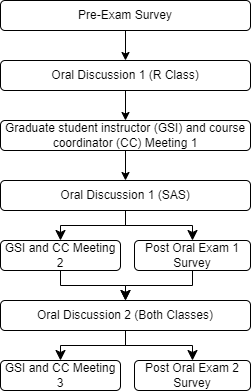
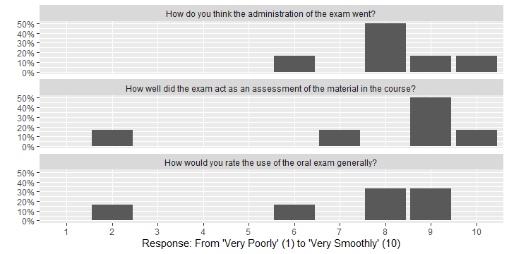

Proper support, training, and care for graduate student well-being is required to successfully implement oral exams to a large number of students.

1 Departments of STEM Education & Statistics, NC State University

GSI Challenges
Oral Exam Grading
GSI Experience
Future Student Preparation
Multiple Forms of GSI Feedback is Essential
Optimize Scheduling for GSIs
Preach the why for oral exams
Prepare through practice
Use Technology
Prepare your students
Understand the student experience! Do oral exams still give the same benefits if they are only 5 minutes? Can generative AI provide similar experiences (at least for practice)?
Proper support, training, and care for graduate student well-being is required to successfully implement oral exams to a large number of students.
